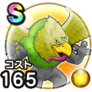

クレセンス
ドラクエ1＆2ReWALKマホトーンやけつくいきこころ最大コスト+4悪魔系へのダメージ+10%麻痺耐性+7%封印耐性+7% / 7.5点
くわしい特徴
【ランク特殊効果】 マホトーンやけつくいきこころ最大コスト+4悪魔系へのダメージ+10%麻痺耐性+7%封印耐性+7%

ドラクエ1＆2ReWALKマホトーンやけつくいきこころ最大コスト+4悪魔系へのダメージ+10%麻痺耐性+7%封印耐性+7% / 7.5点
【ランク特殊効果】 マホトーンやけつくいきこころ最大コスト+4悪魔系へのダメージ+10%麻痺耐性+7%封印耐性+7%